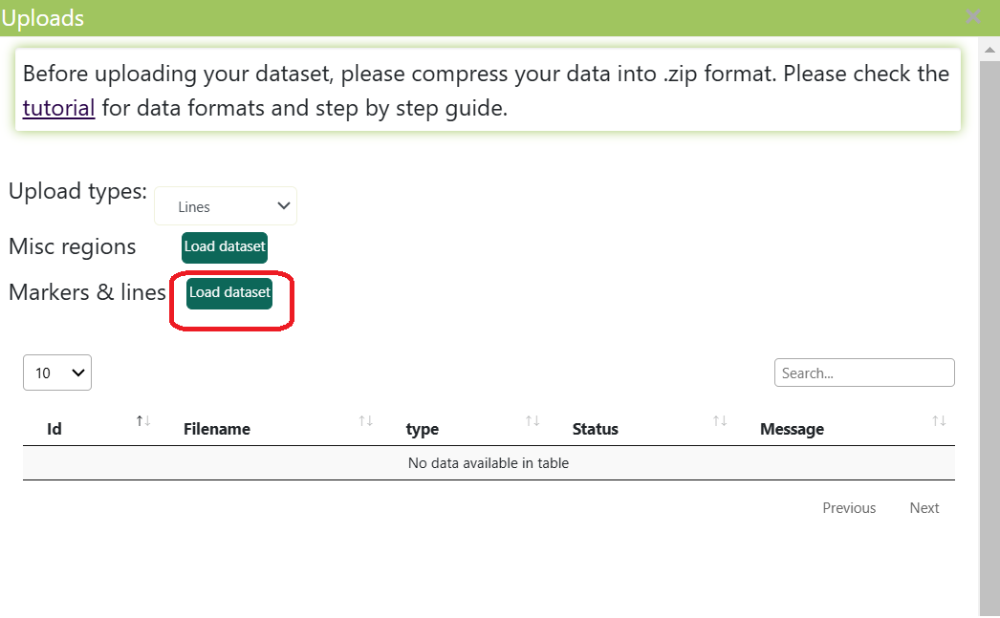
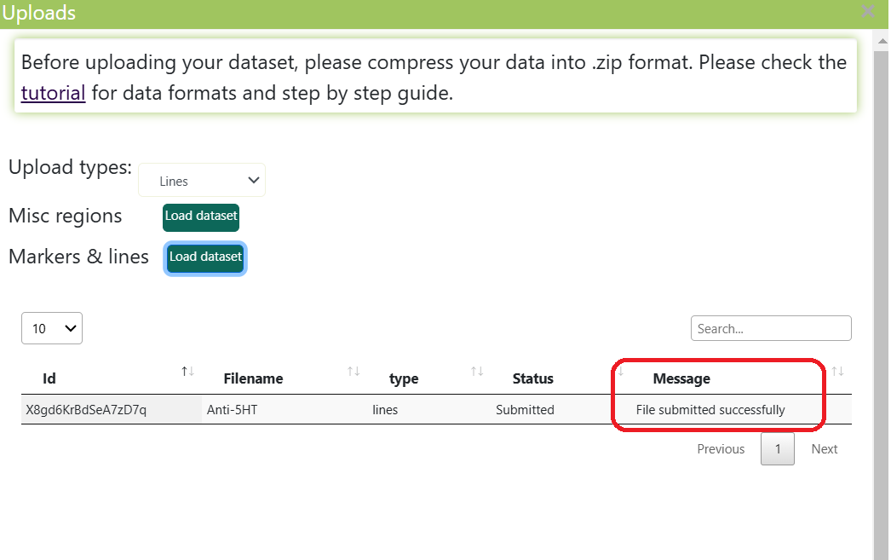

Upload lines
-
This section provides a step-by-step guide to uploading and visualizing custom lines onto the atlas platform.
Custom image stacks can be loaded into FishExplorer in different color channels and can be superimposed on the existing 3D image datasets.
To do this, please follow the steps described below:
Restart FishExplorer by hitting the refresh button of the browser. Then, the sign-in button appears, as shown in the image below. If you are a first time user, please read the general settings tutorial in order to know how to register and login.
-
After signing in, an upload button (here, highlighted in red) will appear on the screen, as shown in the image below.

-
Click on the “Uploads” button (highlighted in red in the image above) in the top menu bar.
This will bring up an upload window as shown in the image below.
The upload window consists of a selection list “Upload types”,
two uploading buttons (“Lines” and “Custom misc masks”) and a jobs table.
The “Upload types” allows the user to filter the list of jobs by “Lines” or “Custom misc masks” in the jobs table.
The “Lines” and “Custom misc masks” buttons allow users to upload custom markers and regions respectively.
The jobs table displays the list of “Submitted”, “Finished” and “Failed” jobs.

-
Click on the “Load dataset” button at the front of the label “Markers & lines”
(highlighted in red in the image above). Then, select a “.zip” compressed tiff file.
Users should ensure that the name of the tiff file and zip file are the same.
The compressed “.zip”file should also be smaller than 500 MB.
Currently, we do not support multiple tiffs in a “.zip” file,
so users should ensure that there is only one tiff file in a zip file.
Once the file has been successfully uploaded,
the new job will be listed in a jobs table with the file name, type (“Lines”)
and the message “File submitted successfully” (as shown in the image below).
Typically, the uploaded file will be processed within 3-5 minutes.

-
Once the file is successfully processed, the corresponding job will be updated in a jobs table with the status “Finished”
and the message “File processed successfully” (highlighted as red in the image below).
If the processing fails, the corresponding job will be updated in a jobs table
with the status “Failed” along with a custom error message.
-
The successfully processed markers & lines are added to the “Custom lines” tab (highlighted in green in the image below).
The “Custom lines” tab is subtab of the “Marker & lines” tab